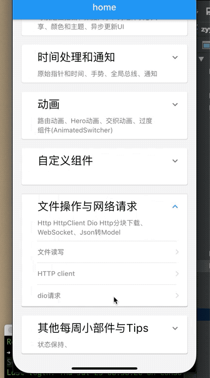

11.3 Http 请求-Dio HTTP库
上一节已经了解清楚了，发现HttpClient发起网络请求比较麻烦，很多事情需要我们手动处理，如果涉及文件上传、下载，cookie管理就会比较麻烦，幸运的是Dart社区有一些第三方请求库，用他们发起Http请求会简单的多，本节我们介绍下dio 库。
dio是一个强大的Dart Http请求库，支持Restful API、FormData、拦截器、请求取消、Cookie管理、文件上传/下载、超时等。dio的使用方式随着其版本升级可能会发生变化，如果本节所述内容和dio官方有差异，请以dio官方文档为准。
引入Dio：
dependencies:
dio: ^x.x.x #请使用pub上的最新版本
导入并创建Dio实例：
import 'package:dio/dio.dart';
Dio dio = Dio();
接下来就可以使用dio发起网络请求了，注意，一个dio可以发起多个http请求，一般来说，APP只有一个http来源时，应该使用单例模式。
例子
发起GET请求
Response response;
response=await dio.get("/test?id=0&name=laowang")
print(response.data.toString());
上面的代码也可以这样子写
var response=await dio.get("/test",queryParameters:{"id":0,"name":"laowang"})
print(response);
发起POST请求
var response=await dio.post("/test",data:{"id":0,"name":"fgyong"})
同时发起多个请求：
var response= await Future.wait([dio.post("/info"),dio.get("/token")]);
下载文件
var response=await dio.download("https://www.google.com/",_savePath);
发送 FormData:
FormData formData = new FormData.from({
"name": "wendux",
"age": 25,
});
response = await dio.post("/info", data: formData)
如果发送的数据是FormData，则dio会将请求header的contentType设为“multipart/form-data”。
通过FormData上传多个文件:
FormData formData = new FormData.from({
"name": "wendux",
"age": 25,
"file1": new UploadFileInfo(new File("./upload.txt"), "upload1.txt"),
"file2": new UploadFileInfo(new File("./upload.txt"), "upload2.txt"),
// 支持文件数组上传
"files": [
new UploadFileInfo(new File("./example/upload.txt"), "upload.txt"),
new UploadFileInfo(new File("./example/upload.txt"), "upload.txt")
]
});
response = await dio.post("/info", data: formData)
值得一提的是，dio内部仍然使用HttpClient发起的请求，所以代理、请求认证、证书校验等和HttpClient是相同的，我们可以在onHttpClientCreate回调中设置，例如：
(dio.httpClientAdapter as DefaultHttpClientAdapter).onHttpClientCreate = (client) {
//设置代理
client.findProxy = (uri) {
return "PROXY 192.168.1.2:8888";
};
//校验证书
httpClient.badCertificateCallback=(X509Certificate cert, String host, int port){
if(cert.pem==PEM){
return true; //证书一致，则允许发送数据
}
return false;
};
};
注意，onHttpClientCreate会在当前dio实例内部需要创建HttpClient时调用，所以通过此回调配置HttpClient会对整个dio实例生效，如果你想针对某个应用请求单独的代理或证书校验策略，可以创建一个新的dio实例即可。
怎么样，是不是很简单，除了这些基本的用法，dio还支持请求配置、拦截器等，官方资料比较详细，故本书不再赘述，详情可以参考dio主页：https://github.com/flutterchina/dio 。 下一节我们将使用dio实现一个分块下载器。
实例
我们通过Google开放API请求自己的开源项目
我们还是用FlutterEasyHub请求进度加载器来配合,该框架动画多达30多种，喜欢的小朋友可以去github看下。
import 'dart:convert';
import 'package:dio/adapter.dart';
import 'package:dio/dio.dart';
import 'package:flutter/cupertino.dart';
import 'package:flutter/material.dart';
import 'dart:convert' as convert;
import 'package:flutter_easyhub/flutter_easy_hub.dart';
///
/// Created by fgyong on 2020/7/27.
///
class BaseHttpDioRoute extends StatefulWidget {
BaseHttpDioRoute({Key key}) : super(key: key);
@override
_BaseHttpDioRouteState createState() => _BaseHttpDioRouteState();
}
class _BaseHttpDioRouteState extends State<BaseHttpDioRoute> {
@override
Widget build(BuildContext context) {
return Scaffold(
appBar: AppBar(
title: Text('Dio'),
),
body: _body(),
);
}
Dio _dio = new Dio();
String _string;
Widget _body() {
return Center(
child: FlutterEasyHub(
child: SingleChildScrollView(
child: Row(
children: <Widget>[
Expanded(
child: Text(_string ?? ''),
)
],
),
),
),
);
}
@override
void initState() {
super.initState();
WidgetsBinding.instance.addPostFrameCallback((timeStamp) {
_getData();
});
}
void _getData() async {
EasyHub.showHub();
(_dio.httpClientAdapter as DefaultHttpClientAdapter).onHttpClientCreate =
(client) {
// config the http client
client.findProxy = (uri) {
return "PROXY localhost:1088";
};
// you can also create a HttpClient to dio
// return HttpClient();
};
Response res = await _dio.get('https://api.github.com/users/ifgyong/repos');
List<dynamic> list = res.data;
// Map<String, dynamic> mapret = convert.jsonDecode(res.data);
setState(() {
_string = res.data.toString();
});
EasyHub.dismiss();
print('res.data${list.toString()}');
}
}
效果：
